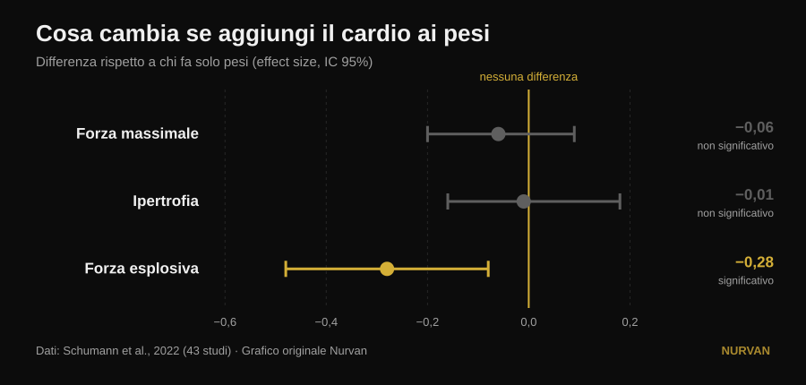
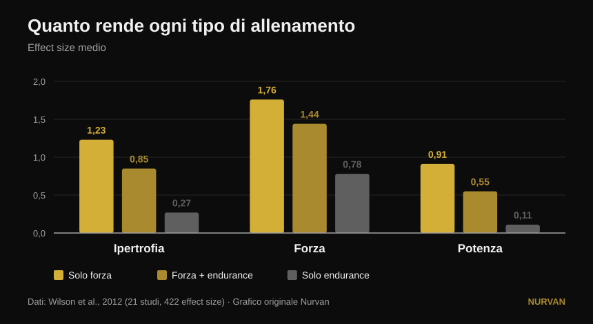

Allenare tutto insieme o specializzarsi in una qualità?
Un post molto condiviso sostiene che specializzarsi in una sola qualità fisica porta risultati peggiori, e che ogni programma dovrebbe contenere sei qualità insieme: potenza, forza, ipertrofia, condizionamento, mobilità e atletismo. Sotto al post, tre lettori diversi chiedono la stessa cosa: dov'è lo studio? Non c'è. Qui ci sono le fonti — e raccontano una storia più precisa, in cui una delle sei qualità viene davvero penalizzata, ma non quella che ti aspetti.

In breve
- Aggiungere lavoro aerobico non ti costa forza massimale né massa muscolare. Su 43 studi la differenza rispetto a chi fa solo pesi è praticamente zero: −0,06 sul massimale e −0,01 sull'ipertrofia, entrambi non significativi (Schumann et al., 2022).
- Ti costa potenza, però. La forza esplosiva cala in modo statisticamente significativo (−0,28, p = 0,007). È l'unica delle qualità elencate nel post che paga davvero un prezzo.
- Il prezzo dipende da quando alleni, non da quanto sei motivato. L'attenuazione della potenza è marcata quando pesi e cardio stanno nella stessa seduta, e sparisce quando le due sedute distano almeno 3 ore (Schumann et al., 2022).
- Non vale uguale per tutti. L'interferenza sulla forza delle gambe compare negli uomini (−0,43) e non nelle donne (0,08), con differenza fra i gruppi significativa (Huiberts et al., 2024).
- La domanda giusta non è "tutto insieme o una cosa alla volta". Forza e massa si mantengono fino a 32 settimane con una seduta a settimana e una serie per esercizio, a patto di tenere alta l'intensità (Spiering et al., 2021). Si spinge una qualità e si mantengono le altre con pochissimo.
Il dilemma è mal posto
L'idea del post è semplice: allenare una qualità per volta produce guadagni "minimi e stretti", allenarle tutte insieme produce di più. È un'intuizione simpatica, ma nessuno studio ha mai confrontato direttamente "un programma specializzato" con "un programma multimodale" e misurato il totale. Quello che la letteratura confronta davvero è un'altra cosa, molto più utile: cosa succede alla forza, alla massa e alla potenza quando aggiungi lavoro aerobico a un programma di pesi identico.
Questa domanda ha una risposta solida, su 43 studi controllati in cui il programma di forza era identico fra i gruppi e cambiava solo l'aggiunta dell'endurance (Schumann et al., 2022):

Due barre su tre attraversano lo zero: sulla forza massimale e sull'ipertrofia il cardio non toglie niente. La terza no: la forza esplosiva — saltare, lanciare, accelerare — si riduce in modo reale.
Una revisione del 2026 che ha messo insieme diciassette meta-analisi arriva allo stesso punto da un'altra angolazione: chi allena forza e resistenza insieme ottiene più capacità aerobica di chi fa solo pesi (0,77, p = 0,02) e risultati comparabili, non superiori, su forza, potenza e ipertrofia (Held et al., 2026). Gli stessi autori avvertono che i dati su atleti d'élite sono scarsi: è proprio lì, ai livelli alti, che la specializzazione conta di più e la ricerca ha meno da dire.
Cosa dice davvero la ricerca
"Specializzarsi in una qualità dà risultati peggiori" — Da precisare
La ricerca dice equivalenza, non inferiorità. Chi aggiunge il cardio non ottiene più forza o più massa di chi si concentra solo sui pesi: ne ottiene altrettanta, più la capacità aerobica in regalo. È un ottimo argomento per non avere paura del condizionamento. Non è un argomento contro chi, per un periodo, sceglie di spingere una cosa sola.
"Allenare tutto insieme fa guadagnare di più" — Da precisare
Di più in quante qualità, non di più in ciascuna. Il totale si allarga, i singoli risultati restano gli stessi. La differenza è sostanziale quando hai una gara, una classe di peso o un obiettivo con una scadenza.
"Il condizionamento non ti costa nulla" — Smentito, per la potenza
Qui il post sbaglia bersaglio, e sbaglia proprio sulla qualità che mette al primo posto. La forza esplosiva paga: −0,28, con intervallo di confidenza che non tocca lo zero (Schumann et al., 2022). Il dato interessante è il perché: l'attenuazione è marcata quando le due sedute sono nella stessa sessione (p = 0,043) e non lo è più quando sono separate da almeno tre ore. Non è una fatalità biologica, è un problema di calendario.
Il quadro più vecchio e più dettagliato dice la stessa cosa guardando le dimensioni dell'effetto grezze (Wilson et al., 2012):

Nello stesso lavoro emergono i due moderatori che il post non nomina: correre riduce ipertrofia e forza, pedalare no, e l'entità dell'interferenza cresce con la frequenza (correlazioni da −0,26 a −0,35) e soprattutto con la durata delle sedute di endurance (da −0,29 a −0,75). Non è "il cardio": è quanto cardio, di che tipo e quando.
"Vale per chiunque" — Da precisare
Un commentatore sotto al post chiede dove siano i risultati sulle donne. È una domanda ottima e ha una risposta. Su 59 studi e 1.346 persone, l'interferenza sulla forza degli arti inferiori compare negli uomini (−0,43) e non nelle donne (0,08), con una differenza fra i due gruppi statisticamente significativa (p = 0,03). Su forza degli arti superiori, potenza e massimo consumo di ossigeno nessuna differenza fra i sessi (Huiberts et al., 2024).
"La mobilità è un blocco obbligatorio a parte" — Da precisare
Se alleni la forza su tutta l'escursione articolare, una parte del lavoro di mobilità la stai già facendo. Su 11 studi controllati e 452 persone, allenamento di forza e stretching non differiscono nei guadagni di escursione articolare (−0,22, p = 0,206), e la cosa regge in tutti i sottogruppi analizzati (Afonso et al., 2021). Gli autori sottolineano che gli studi sono molto eterogenei, quindi non è una licenza per smettere di allungarsi se hai una limitazione specifica — ma una delle sei caselle si riempie in parte da sola.
"Una qualità alla volta produce guadagni minimi" — Smentito nel verso opposto
Alternare l'enfasi nel tempo non è un difetto: è la definizione di periodizzazione, e sul massimale funziona meglio del non periodizzare. A volume pareggiato, su 35 studi, programmi periodizzati battono quelli non periodizzati sul massimale (0,31, p = 0,02), mentre sull'ipertrofia non cambia nulla (0,13, p = 0,27). E fra periodizzazione lineare e ondulata, il vantaggio dell'ondulata sul massimale esiste solo negli allenati (0,61) e sparisce nei principianti (0,06) (Moesgaard et al., 2022).
Tradotto: se vuoi massa, l'ordine conta poco e puoi fare tutto insieme senza rimpianti. Se vuoi il massimale, un'organizzazione nel tempo ti serve — e "tutto insieme sempre" non è un'organizzazione.
La domanda che il post non si pone
Il dilemma "tutte le qualità insieme oppure una alla volta" ha un terzo termine che nessuno dei due campi nomina: quanto poco basta per non perdere ciò che hai già costruito. La risposta è stata raccolta studio per studio ed è sorprendentemente bassa (Spiering et al., 2021):
| Qualità | Dose minima per mantenerla | Per quanto | Condizione |
|---|---|---|---|
| Forza e massa (under 40) | 1 seduta a settimana, 1 serie per esercizio | fino a 32 settimane | il carico relativo resta alto |
| Massa (età avanzata) | 2 sedute a settimana, 2-3 serie | — | il carico relativo resta alto |
| Capacità aerobica | 2 sedute a settimana, oppure volume ridotto del 33-66% (anche 13-26 minuti) | fino a 15 settimane | la frequenza cardiaca di lavoro resta alta |
La variabile che non si può tagliare è sempre la stessa: l'intensità. Volume e frequenza si possono ridurre moltissimo, il carico o il ritmo no.
Questo cambia tutto il discorso. Non devi scegliere fra sei qualità allenate male e una allenata bene. Spingi una qualità alla volta per sei-otto settimane e metti le altre in modalità mantenimento con una seduta o una serie. È così che i preparatori costruiscono un atleta completo senza bruciarlo, ed è esattamente la via di mezzo che il post descrive come impossibile.
Come applicarlo
- Scegli una priorità per le prossime 6-8 settimane. Una sola: il massimale, la massa, il condizionamento. Sulle altre non smetti, rallenti.
- Tieni in vita il resto con la dose minima. Una seduta settimanale con un paio di serie pesanti basta a conservare forza e massa per mesi (Spiering et al., 2021). L'importante è che il carico resti vicino a quello che usavi, non che il volume resti alto.
- Separa i pesi dal condizionamento di almeno 3 ore, o mettili in giorni diversi, se la potenza ti interessa (Schumann et al., 2022). Se devi accorparli, metti prima i pesi: è la tendenza che emerge dall'umbrella review più recente (Held et al., 2026).
- Scegli bene il tipo di cardio. La bici non interferisce, la corsa sì — soprattutto se è lunga e frequente (Wilson et al., 2012). Se devi correre e vuoi anche costruire gambe, tieni le sedute brevi.
- Non confondere mobilità e stretching con un blocco in più. Allena la forza su tutta l'escursione articolare e aggiungi lavoro mirato solo dove hai una limitazione reale (Afonso et al., 2021). Il nostro approfondimento su come scegliere serie e ripetizioni ti aiuta a impostare la parte di forza.
- Misura, non immaginare. L'interferenza non si sente: si vede sui numeri. Se dopo quattro settimane di condizionamento il tuo salto o la velocità del bilanciere calano mentre i carichi tengono, hai trovato il prezzo di cui parla la ricerca.
💡 Con Nurvan
Allenare più qualità insieme funziona solo se puoi vedere quale sta scendendo. In Nurvan tieni programmi e discipline diverse nello stesso diario — forza, ipertrofia, functional, HYROX — con carico, ripetizioni e RIR registrati seduta per seduta e lo storico sempre a confronto. Così la "modalità mantenimento" diventa una cosa che controlli davvero, invece di una speranza: se il massimale scende mentre il condizionamento sale, te ne accorgi dopo due settimane e non dopo due mesi.
Domande frequenti
Il cardio fa perdere i muscoli?
No. Su 43 studi controllati, aggiungere lavoro aerobico a un identico programma di pesi non cambia l'ipertrofia (−0,01, p = 0,919) né la forza massimale (−0,06, p = 0,446) (Schumann et al., 2022). L'unica qualità che ne risente è la forza esplosiva.
Meglio fare cardio e pesi nello stesso giorno o in giorni diversi?
Se ti interessa la potenza, separali: l'attenuazione della forza esplosiva è marcata quando le due sedute sono nella stessa sessione e non lo è più quando sono separate da almeno tre ore (Schumann et al., 2022). Se ti interessano solo forza e massa, l'organizzazione pesa molto meno.
Quanto allenamento serve per non perdere la forza che ho?
Negli adulti sotto i 40 anni, una seduta a settimana con una serie per esercizio ha mantenuto forza e massa fino a 32 settimane, purché il carico relativo restasse alto (Spiering et al., 2021). Il volume si taglia, l'intensità no.
Devo allenare sei qualità come dice il post?
Non c'è una fonte che stabilisca un numero obbligatorio di qualità, né che dimostri una "sinergia" fra di esse. Quello che le fonti dimostrano è che puoi allenarne diverse insieme senza perdere forza né massa, e che le qualità che non stai spingendo si conservano con pochissimo lavoro. Il numero giusto dipende dal tuo obiettivo, non da una regola.
Leggi anche
- Split di allenamento: principiante o avanzato
- Quante ripetizioni servono per la massa: il mito dell'8-12
- Leg extension o leg press: cosa cresce davvero
Fonti
- Schumann M, Feuerbacher JF, Sünkeler M, Freitag N, Rønnestad BR, Doma K, Lundberg TR, 2022. Compatibility of Concurrent Aerobic and Strength Training for Skeletal Muscle Size and Function: An Updated Systematic Review and Meta-Analysis. Sports Med 52(3):601–612. PMID 34757594 — doi:10.1007/s40279-021-01587-7
- Held S, Wolf L, Rappelt L, Bloch W, Donath L, Micke F, Geisler S, Isenmann E, 2026. Maximizing Adaptations in Concurrent Training: An Umbrella Review of Meta-analyses. Sports Med 56(6):1489–1512. PMID 41762427 — doi:10.1007/s40279-026-02401-y
- Wilson JM, Marin PJ, Rhea MR, Wilson SMC, Loenneke JP, Anderson JC, 2012. Concurrent training: a meta-analysis examining interference of aerobic and resistance exercises. J Strength Cond Res 26(8):2293–2307. PMID 22002517 — doi:10.1519/JSC.0b013e31823a3e2d
- Huiberts RO, Wüst RCI, van der Zwaard S, 2024. Concurrent Strength and Endurance Training: A Systematic Review and Meta-Analysis on the Impact of Sex and Training Status. Sports Med 54(2):485–503. PMID 37847373 — doi:10.1007/s40279-023-01943-9
- Spiering BA, Mujika I, Sharp MA, Foulis SA, 2021. Maintaining Physical Performance: The Minimal Dose of Exercise Needed to Preserve Endurance and Strength Over Time. J Strength Cond Res 35(5):1449–1458. PMID 33629972 — doi:10.1519/JSC.0000000000003964
- Moesgaard L, Beck MM, Christiansen L, Aagaard P, Lundbye-Jensen J, 2022. Effects of Periodization on Strength and Muscle Hypertrophy in Volume-Equated Resistance Training Programs: A Systematic Review and Meta-analysis. Sports Med 52(7):1647–1666. PMID 35044672 — doi:10.1007/s40279-021-01636-1
- Afonso J, Ramirez-Campillo R, Moscão J, Rocha T, Zacca R, Martins A, Milheiro AA, Ferreira J, Sarmento H, Clemente FM, 2021. Strength Training versus Stretching for Improving Range of Motion: A Systematic Review and Meta-Analysis. Healthcare (Basel) 9(4):427. PMID 33917036 — doi:10.3390/healthcare9040427
Dati bibliografici verificati su PubMed. Spunto iniziale: il post di John Rusin, che non riporta fonti. Nessun testo o immagine del post è stato riprodotto: tema e affermazioni sono stati riscritti e verificati sulle fonti primarie.
Giammaria Loi è il fondatore di Nurvan. Si allena con i pesi dal 2012, lavora come personal trainer e coach certificato FIPE dal 2013 e gareggia nel powerlifting a livello nazionale dal 2018. Ogni articolo che firma parte dagli studi scientifici e arriva a ciò che funziona davvero in palestra. Pagina autore
Nota: contenuto informativo, non sostituisce il parere di un medico o di un professionista. Se hai patologie o segui una terapia, parlane con il tuo medico prima di modificare il tuo programma di allenamento.